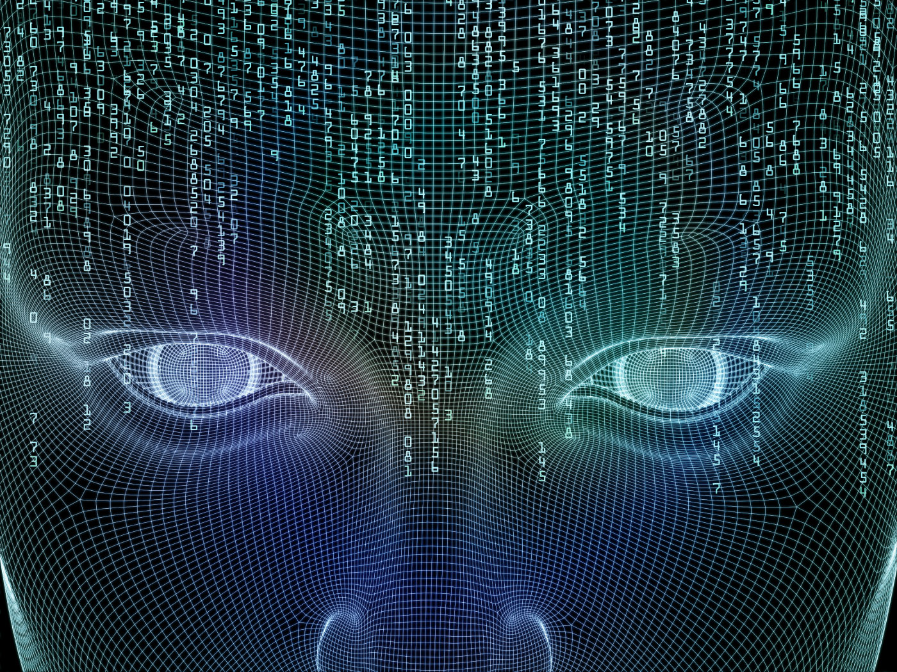

Hello everyone!
My name is Ömer Faruk Bitikçioğlu
and my school number is 161044010
Since the invention of computers or machines, their capability to perform various tasks went on growing exponentially.
Humans have developed the power of computer systems in terms of their diverse working domains,
their increasing speed, and reducing size with respect to time.
A branch of Computer Science named Artificial Intelligence pursues creating the computers or machines as intelligent as human beings.
In this page you will find a little information about Artificial Intelligence
If you are interested check the links below and get some knowledge about it.

"Learn more about A.I now!"